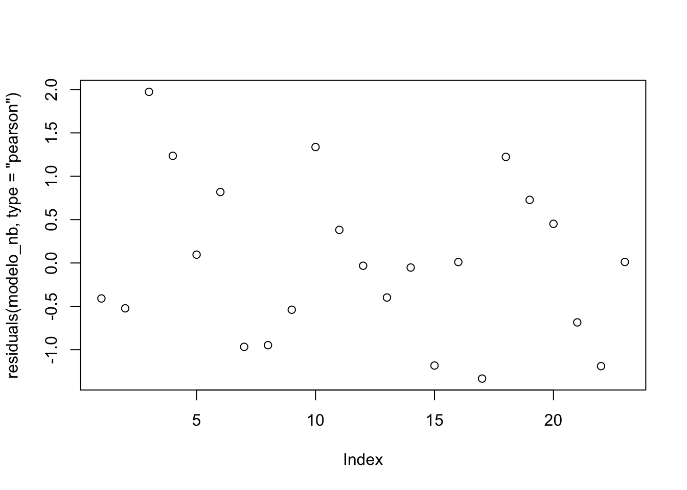

Sesión 2
Regresión De Poisson
FACULTAD DE CIENCIAS SOCIALES - PUCP
Curso: POL 304 - Estadística para el análisis político 2 | Semestre
2025 - 1
Docente: Marylia Cruz
üéØ ¬øPara qu√© sirve la Regresi√≥n de Poisson?
La regresión de Poisson es un modelo estadístico que se utiliza para explicar una variable dependiente de tipo conteo, es decir, cuando el resultado es un número entero no negativo (0, 1, 2, 3, …), y representa la frecuencia con la que ocurre un evento.
üìå Ejemplos comunes de uso?
| Contexto | Variable.dependiente…conteo | Variables.independientes |
|---|---|---|
| Salud pública | Número de hospitalizaciones por semana | Edad, sexo, comorbilidades |
| Sociología | Número de protestas por región | Pobreza, educación, presencia estatal |
| Educación | Número de cursos desaprobados | Horas de estudio, asistencia |
| Transporte | Número de accidentes en una avenida | Iluminación, flujo vehicular |
⚙️¿Cómo funciona?
La variable de respuesta \(Y\) sigue una distribución de Poisson.
El valor esperado de \(Y\), denotado como \(\lambda\), se relaciona con los predictores mediante una función logarítmica:
El modelo de regresión de Poisson se expresa mediante la siguiente ecuación:
\[ \log(\lambda) = \beta_0 + \beta_1 X_1 + \beta_2 X_2 + \dots + \beta_k X_k \]
donde:
\[ \lambda = e^{\beta_0 + \beta_1 X_1 + \dots + \beta_k X_k} \]
Esto garantiza que \(\lambda\) (el número esperado de eventos) siempre sea positivo.
üß™¬øCuándo usarla?
La variable dependiente es un conteo (no continua, ni categórica)
Los valores son enteros ≥ 0
Los eventos son independientes
El conteo se produce en un intervalo fijo (tiempo, espacio, etc.)
La media ≈ varianza del conteo (si no, puede que necesites una regresión binomial negativa)
ü´∂¬øC√≥mo se realiza en R?
Utilizaremos la base de datos de Protestas.
library(rio)
data=import("Protestas.xlsx")
names(data)## [1] "Departamento" "EventosdeProtestas" "Competitividad"
## [4] "EntornoEconomico" "Salud" "Educacion"
## [7] "Laboral" "Institucional"VD: Eventos de protestas: Número de protestas realizadas en el 2022
Evaluación de Supuestos
- Evaluar sobredispersión (varianza vs media)
# Calcular media y varianza de la variable dependiente
mean(data$EventosdeProtestas)## [1] 39.84var(data$EventosdeProtestas)## [1] 3432.64# Sobredispersión si varianza > media significativamenteRegresión Poisson
Asumimos que si cumplimos el requisito:
modelo_poisson <- glm(EventosdeProtestas ~ Salud + Educacion+Institucional,
data = data,
family = poisson())
summary(modelo_poisson)##
## Call:
## glm(formula = EventosdeProtestas ~ Salud + Educacion + Institucional,
## family = poisson(), data = data)
##
## Deviance Residuals:
## Min 1Q Median 3Q Max
## -8.925 -4.514 -1.848 1.437 17.176
##
## Coefficients:
## Estimate Std. Error z value Pr(>|z|)
## (Intercept) 3.10353 0.18149 17.100 < 2e-16 ***
## Salud 0.32171 0.04520 7.118 1.10e-12 ***
## Educacion 0.06426 0.03820 1.682 0.0926 .
## Institucional -0.32775 0.04198 -7.807 5.87e-15 ***
## ---
## Signif. codes: 0 '***' 0.001 '**' 0.01 '*' 0.05 '.' 0.1 ' ' 1
##
## (Dispersion parameter for poisson family taken to be 1)
##
## Null deviance: 1236.84 on 24 degrees of freedom
## Residual deviance: 883.47 on 21 degrees of freedom
## AIC: 1015
##
## Number of Fisher Scoring iterations: 5exp(coef(modelo_poisson))## (Intercept) Salud Educacion Institucional
## 22.2765258 1.3794891 1.0663699 0.7205399Interpretación de los coeficientes
Intercepto (
(Intercept)= 3.10)
Corresponde al logaritmo del número esperado de eventos cuando todas las variables independientes son cero.
\[ \exp(3.10) \approx 22.3 \]
Es decir, se espera un promedio de 22 eventos cuando Salud, Educación e Institucional son 0.Salud (
coef = 0.32, p < 0.001)
A medida que aumenta el factor “Salud”, el número esperado de eventos aumenta en un 38%:
\[ \exp(0.32) \approx 1.38 \]Educación (
coef = 0.06, p ≈ 0.093)
Tiene un efecto débilmente positivo sobre el número de eventos, pero no es estadísticamente significativa.
\[ \exp(0.06) \approx 1.07 \]
Esto sugiere un posible aumento del 6.6% en los eventos, aunque con baja evidencia.Institucional (
coef = -0.33, p < 0.001)
Tiene un efecto negativo claro. Un aumento en el componente institucional reduce el número esperado de eventos en un 28%:\[ \exp(-0.33) \approx 0.72 \]
Conclusión
El modelo sugiere que mayores niveles en el sector salud están relacionados con un aumento en las protestas, mientras que una mayor capacidad institucional está asociada con una reducción significativa en los eventos. La variable educación no presenta un efecto claro con suficiente evidencia estadística.
üéØ ¬øPor qu√© no basta la regresi√≥n de Poisson?
El modelo de Poisson asume que la varianza es igual a la media. Pero en datos reales de conteo (como protestas, enfermedades, delitos), eso casi nunca se cumple. Cuando hay sobredispersión, los errores estándar del modelo Poisson se subestiman, y los p-valores no son confiables.
Comparación entre modelos: Poisson, Quasi-Poisson y Binomial Negativa
A continuación, se presenta una tabla comparativa entre los modelos usados para datos de conteo con sobredispersión:
| Modelo | Corrige.varianza | Cambia.coeficientes | Corrige.errores.estándar | Maneja.sobredispersión.fuerte | Comparación.con.AIC.posible | Paquete.necesario |
|---|---|---|---|---|---|---|
| Poisson clásico | No | No | No | No | Sí | base R |
| Quasi-Poisson | Sí (φ·μ) | No | Sí | Moderadamente | No | base R |
| Binomial negativa | Sí (μ + μ²/θ) | Sí | Sí | Sí | Sí | MASS |
La diferencia está en la varianza:
- Poisson clásico:
\[ \text{Var}(Y_i) = \mu_i \]
Recomendaciones
Usa Quasi-Poisson si solo quieres corregir los errores estándar sin alterar los coeficientes.
Usa Binomial negativa si la sobredispersión es significativa y quieres una mejor estimación del modelo y su ajuste.
Regresión Quasi Poisson
Cuando te interesa ajustar varianza sin cambiar los coeficiente
Permite que la varianza sea mayor que la media
No cambia los coeficientes, pero ajusta los errores estándar para que los tests sean válidos
\[ \text{Var}(Y_i) = \phi \cdot \mu_i \]
donde \(\phi\) es el parámetro de dispersión estimado para corregir la varianza.
modelo_qp <- glm(EventosdeProtestas ~ Salud + Educacion+Institucional, data = data, family = quasipoisson())
summary(modelo_qp)##
## Call:
## glm(formula = EventosdeProtestas ~ Salud + Educacion + Institucional,
## family = quasipoisson(), data = data)
##
## Deviance Residuals:
## Min 1Q Median 3Q Max
## -8.925 -4.514 -1.848 1.437 17.176
##
## Coefficients:
## Estimate Std. Error t value Pr(>|t|)
## (Intercept) 3.10353 1.25892 2.465 0.0224 *
## Salud 0.32171 0.31353 1.026 0.3165
## Educacion 0.06426 0.26501 0.242 0.8108
## Institucional -0.32775 0.29122 -1.125 0.2731
## ---
## Signif. codes: 0 '***' 0.001 '**' 0.01 '*' 0.05 '.' 0.1 ' ' 1
##
## (Dispersion parameter for quasipoisson family taken to be 48.11518)
##
## Null deviance: 1236.84 on 24 degrees of freedom
## Residual deviance: 883.47 on 21 degrees of freedom
## AIC: NA
##
## Number of Fisher Scoring iterations: 5Regresión Binomial Negativa
Este modelo introduce un parámetro adicional para manejar la sobredispersión.
Te permite mantener la lógica de conteo, pero ajusta mejor la varianza.
Ajusta directamente la varianza:
En este modelo, la varianza depende cuadráticamente de la media:
\[ \log(\mu_i) = \beta_0 + \beta_1 X_{1i} + \dots + \beta_k X_{ki} \]
\[ \text{Var}(Y_i) = \mu_i + \frac{\mu_i^2}{\theta} \]
donde \(\theta\) es el parámetro que
controla la sobredispersión:
- Si \(\theta \to \infty\), se aproxima
al modelo de Poisson. - Si \(\theta\)
es pequeño, hay mucha sobredispersión.
library(dplyr)
# Este paso no es necesario, sirve para quedarnos solo con los departamentos con número de eventos de protestas menor a 100 en el aña 2022
data=filter(data,EventosdeProtestas<100)library(MASS)
modelo_nb <- glm.nb(EventosdeProtestas ~ Salud + Educacion+Institucional, data = data)
summary(modelo_nb)##
## Call:
## glm.nb(formula = EventosdeProtestas ~ Salud + Educacion + Institucional,
## data = data, init.theta = 2.31356648, link = log)
##
## Deviance Residuals:
## Min 1Q Median 3Q Max
## -2.37428 -0.72428 -0.03183 0.52463 1.46773
##
## Coefficients:
## Estimate Std. Error z value Pr(>|z|)
## (Intercept) 4.65492 0.81070 5.742 9.36e-09 ***
## Salud 0.01734 0.16280 0.107 0.91518
## Educacion 0.08530 0.14938 0.571 0.56800
## Institucional -0.40435 0.15446 -2.618 0.00885 **
## ---
## Signif. codes: 0 '***' 0.001 '**' 0.01 '*' 0.05 '.' 0.1 ' ' 1
##
## (Dispersion parameter for Negative Binomial(2.3136) family taken to be 1)
##
## Null deviance: 32.289 on 22 degrees of freedom
## Residual deviance: 24.154 on 19 degrees of freedom
## AIC: 196.16
##
## Number of Fisher Scoring iterations: 1
##
##
## Theta: 2.314
## Std. Err.: 0.718
##
## 2 x log-likelihood: -186.155El modelo con menor AIC es preferible.
Si el modelo binomial negativa mejora el ajuste, confirma que la sobredispersión era relevante.
AIC(modelo_poisson, modelo_qp,modelo_nb)## Warning in AIC.default(modelo_poisson, modelo_qp, modelo_nb): models are not all
## fitted to the same number of observations## df AIC
## modelo_poisson 4 1014.9897
## modelo_qp 4 NA
## modelo_nb 5 196.1553Deben estar más centrados y sin patrón evidente.
plot(residuals(modelo_nb, type = "pearson"))
Ejercicio para casa
La base quine contiene información sobre ausentismo escolar de estudiantes en Australia, recolectada en un estudio sobre educación.
Objetivo: Analizar qué factores están asociados al número de días de ausencia de los estudiantes durante un año escolar.
library(MASS)
head(quine)## Eth Sex Age Lrn Days
## 1 A M F0 SL 2
## 2 A M F0 SL 11
## 3 A M F0 SL 14
## 4 A M F0 AL 5
## 5 A M F0 AL 5
## 6 A M F0 AL 13mean(quine$Days)## [1] 16.4589var(quine$Days)## [1] 264.1673